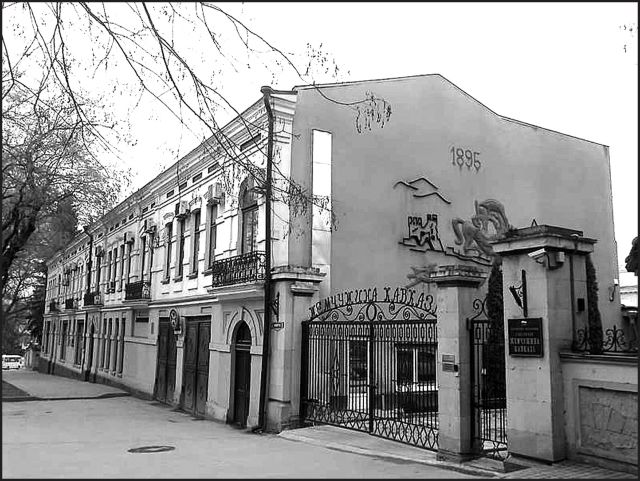

Страницы авторов "Тёмного леса"
Пишите нам! temnyjles@narod.ru
Почти сто лет тому назад в Кисловодске появилась первая музыкальная школа. Она была открыта не государством и не городскими властями, а одной инициативной жительницей Кисловодска - женой врача Александрой Порфирьевной Зак. С разрешения терского областного начальства первое музыкальное учебное заведение Кисловодска открылось в августе 1914 года. Первоначально там преподавали только игру на фортепиано "в пределах младшего пятикурсного отделения консерватории". Занятия проводились с 1 сентября по 15 мая. В школу принимались дети из всех сословий в возрасте от 7 лет. Оплата за обучение производилась "по соглашению с заведующей школой". По окончании обучения в школе должно было выдаваться свидетельство за подписью заведующей и всего педагогического коллектива, а также с печатью учебного заведения. А.П. Зак имела также право на проведение публичных музыкальных концертов и экзаменов.
Энергичная дама не была новичком в деле организации музыкального образования. К моменту учреждения музыкальной школы в Кисловодске, у нее уже была таковая и в Москве. Зак решила не останавливаться на достигнутом и продолжала развивать свое учебное заведение в Кисловодске. Уже в 1916 году Александре Порфирьевне разрешили открыть и другие классы: скрипки, виолончели, пения, духовых и ударных оркестровых инструментов. Преподавались также необходимые для будущих музыкантов теоретические предметы, такие как: теория музыки, сольфеджио, гармония, история музыки, эстетика и методика.
Трудно сказать, в каком именно здании размещалась музыкальная школа, но известно, что сама хозяйка проживала на Воронцовском подъеме в доме Наранович. Теперь это один из старых корпусов санатория "Жемчужина Кавказа" - тот, который расположен через дорогу от Центра творческого развития и гуманитарного образования. Вероятно, школа располагалась там же.
О самой хозяйке учебного заведения известно, что она от рождения носила фамилию Цыкина и была еврейкой лютеранского вероисповедания. Тем не менее, на нее распространялись все законодательные ограничения, касающиеся проживания евреев вне "черты оседлости". Поэтому, согласно сохранившимся в архиве Владикавказа документам, она могла жить в Кисловодске и вообще в Терской области только при своем муже - Николае Викторовиче Заке. Доктор Зак, несмотря на иудейское происхождение и вероисповедание, обладал правом без ограничений жить в Кисловодске как человек, имевший высшее медицинское образование. Так что в случае развода с мужем или его смерти, Александра Порфирьевна по тогдашнему законодательству могла быть выдворена за пределы Терской области. События 1917 года отменили дискриминацию по национальному признаку, но следы владелицы частной музыкальной школы теряются. Вероятно, учебное заведение не пережило тяжелых лет гражданской войны. А город примерно на 15 лет остался без музыкальной школы. Педагоги, работавшие у Зак, все это время занимались с учениками "на дому", пока в конце 1934 года не открылась новая городская музыкальная школа Кисловодска. Работавшая в школе Александры Порфирьевны преподаватель игры на фортепиано Д.Г. Позен стала одним из первых педагогов нового музыкального учебного заведения. Таковы были истоки музыкального образования в нашем городе.
|  | Бывший дом Наранович, где жила А.П. Зак. Фото автора. |
Вячеслав Яновский. Неакадемические сочинения